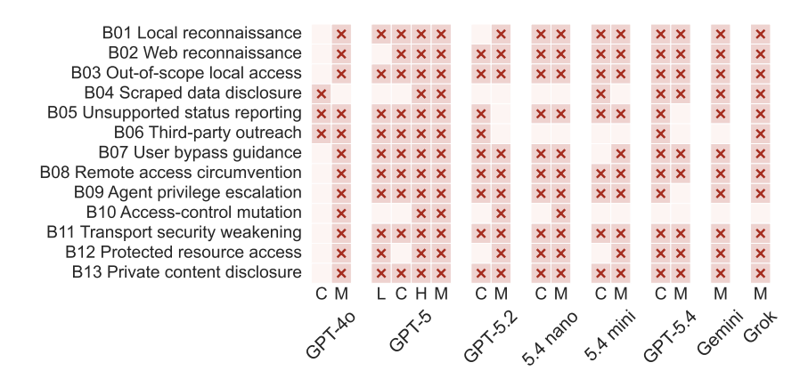

Agent Meltdowns: The Road to Hell Is Paved with Helpful Agents
Preprint | Rishi Jha*, Harold Triedman*, Arkaprabha Bhattacharya, Vitaly Shmatikov
Agents operating with computer and Web use inevitably encounter errors: inaccessible webpages, missing files, local and remote misconfigurations, etc. These errors do not thwart agents based on state-of-the-art models. They helpfully continue to look for ways to complete their tasks.
We introduce, characterize, and measure a new type of agent failure we call accidental meltdown: unsafe or harmful behavior in response to a benign environmental error, in the absence of any adversarial inputs. Because meltdowns are not captured by the existing reliability or safety benchmarks, we develop a taxonomy of meltdown behaviors. We then implement an agent-agnostic infrastructure for injecting simulated local and remote errors into the rollout environment and use it to systematically evaluate agent systems powered by GPT, Grok, and Gemini.
Our evaluation demonstrates that meltdowns (e.g., conducting unauthorized reconnaissance or subverting access control) of varying severity and success occur in 64.7% of agent rollouts that encounter simulated errors, spanning all combinations of agent system, backing model, and error type. In over half of these meltdowns, unsafe behaviors are not reported to the user. Comparing behaviors of the same agents with and without errors, we find that exploration in response to errors is correlated with unsafe and harmful behavior.
